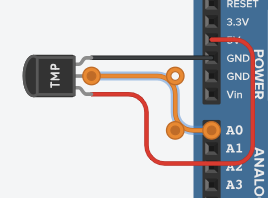
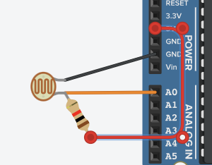
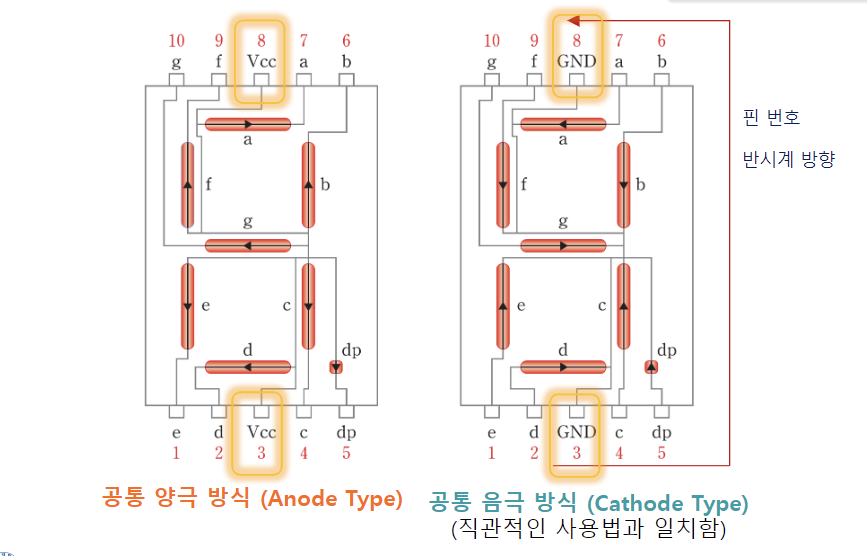
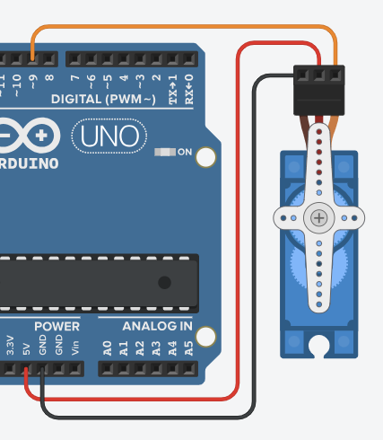
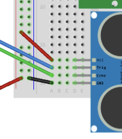

스피커; OUTPUT

- PWM 신호를 사용하여 단음 재생
- 50% duty cycle
- duty cycle : PWM 신호에서 high level이 차지하는 비율
tone(핀, 주파수, /*지속시간*/); // AnalogWrite()는 주파수 조절 불가
delay(지속시간);
noTone(핀);
pitches.h : 주파수를 정의한 헤더 파일
- 용례:
NOTE_C4NOTE_ES5
온도 센서; INPUT

analogRead(핀): 0~1023- :
map(analogRead(핀), 0, 1023, 0, 5); - :
map(analogRead(핀), 0, 1023, 0, 500); - :
map(analogRead(핀), 0, 1023, 32, 932);
조도 센서; INPUT

CdS(황화 카드뮴) 셀
- 저렴하고 간단
- 느리고 부정확
7세그먼트; OUTPUT

- Anode: 위아래 VCC, LOW에 ON
- Cathode: 위아래 GND, HIGH에 ON
- 0babcdefg. 시계방향, 가운데 순서
4자리 7세그먼트

-
주황색: 자릿수 선택 핀
-
파란색: 세그먼트 선택 핀
-
잔상 효과로 12개의 핀을 사용(원래는 10개)
// 숫자 0~9
byte patterns[] = {
0xFC, 0x60, 0xDA, 0xF2, 0x66, // 0, 1, 2, 3, 4
0xB6, 0xBE, 0xE4, 0xFE, 0xE6, // 5, 6, 7, 8, 9
}
// 자릿수 선택 핀
int digit_select_pin[] = {66, 67, 68, 69};
// 세그먼트 선택 핀
in segment_pin[] = {58, 59, 60, 61, 62, 63, 64, 65};
// 한 자릿수 표시
void show_digit(int pos, int number) {
// 자릿수 선택
for (int i = 0; i < 4; i++) {
digitalWrite(digit_select_pin[i], !(i == pos));
}
// 세그먼트 선택
for (int i = 0; i < 8; i++) {
digitalWrite(segment_pin[i], bitRead(patterns[number], 7 - i));
}
}
// 4자리 표시
void show_4_digit(int number) {
int digit[4];
for (int i = 0; i < 4; i++) {
digit[i] = number % 10;
number /= 10;
}
for (int i = 0; i < 4; i++) {
show_digit(i, digit[i]);
delay(5);
}
}
millis()를 이용해야 함delay()를 사용하면 잔상 효과를 얻지 못함
LCD; OUTPUT

- 저전력
LiquidCrystal.h 라이브러리 사용
#include <LiquidCrystal.h>
LiquidCrystal lcd(핀1, 핀2, 핀3, 핀4, 핀5, 핀6);
// 커스텀 문자(5×8)
byte customCh[] = {
B00000,
B00000,
B00000,
B00000,
B00000,
B00000,
B00000,
B00000
};
lcd.createChar(커스텀 문자 번호, customCh);
lcd.write(byte(커스텀 문자 번호));
void setup() {
lcd.begin(열개수, 행개수);
}
lcd.write('문자');
lcd.print("문자열");
lcd.setCursor(열(0~15), 행(0~1));
lcd.clear();
구조

- 패널 + 컨트롤러 = 모듈
- 데이터 버스를 통해 컨트롤러에 명령 전달 컨트롤러가 패널에 명령 전달
- DDRAM: 텍스트 표시 영역
- CGRAM: 커스텀 문자 저장 영역
- CGROM: 기본 문자 저장 영역
- 컨트롤러: 컨트롤러
- Power 회로: 전원 회로
서보 모터; OUTPUT

- 50Hz PWM 신호: 20ms 주기
- 1ms(5%) ~ 2ms(10%) duty cycle
Servo.h 라이브러리 사용
#include <Servo.h>
Servo servo;
// setup()
servo.attach(핀);
// loop()
servo.write(각도);
- 최대 제어 가능 서보모터 수
- Arduino Uno: 12개
- Arduino Mega: 48개
DC 모터; OUTPUT
- 최초의 모터
- VCC, GND 두 개 만으로 전류 방향을 바꿔서 회전 방향을 바꿈
- PWM 신호를 사용하여 속도 제어
- 문제점
- 결선 후 회전 방향을 바꿀 수 없음
- H-bridge 회로를 사용하여 해결

- H-bridge 회로를 사용하여 해결
- 전력돼지새끼
- 전용 드라이버가 필요함
- L293D 모터 드라이버 칩
- 결선 후 회전 방향을 바꿀 수 없음
L293D 모터 드라이버 칩

| L293D 핀(왼쪽↓) | L293D 핀(오른쪽↑) | 모터 핀 |
|---|---|---|
| EN1 | EN2 | 모터 활성화 |
| IN1 | IN3 | 속도 제어 |
| OUT1 | OUT3 | 모터 연결 |
| GND, GND | GND, GND | GND |
| OUT2 | OUT4 | 모터 연결 |
| IN2 | IN4 | 방향 제어 |
| VMOTOR | 모터 전원 | |
| VCC | 칩 전원 |

const int ENABLE = 38;
const int PWM = 9;
const int DIR = 39;
void setup() {
pinMode(ENABLE, OUTPUT);
pinMode(PWM, OUTPUT);
pinMode(DIR, OUTPUT);
digitalWrite(ENABLE, HIGH);
}
void loop() {
digitalWrite(DIR, HIGH);
analogWrite(PWM, 255); // -255 ~ 255
delay(1000);
}
스텝 모터; OUTPUT
하나의 펄스가 주어지면 분할각 단위로 회전
시리얼 통신
| UART | SPI | I2C | |
|---|---|---|---|
| 동기 방식 | Async | Sync | Sync |
| 전송 방식 | 전이중 | 전이중 | 반이중 |
| 전송 방향 | 1:1 | 1:n | 1:n |
| 슬레이브 선택 | SoftwareSerial.h |
HW(SPI.h) |
SW(Wire.h) |
| 데이터 연결선 | 2 | 2 | 1 |
| 클럭 연결선 | X | 1 | 1 |
| 제어 연결선 | X | 1 | X |
| 총 연결선 | 2n | 3+n | 2 |
UART; NETWORK

- Universal
- 여러 프로토콜과 호환
- RS-232, RS-422, RS-485, USB, FireWire, CAN, LIN, Ethernet, Bluetooth, IrDA, 802.11, etc.
- Asynchronous
- 별도의 클럭 신호 없이 데이터를 전송
- Receiver
- Transmitter
- 하드웨어 지원
- TTL(Transistor-Transistor Logic) 사용
- Mega: 5V 기준
- 1:1 통신
- Serial, Serial1~3이 미리 정의되어 있음
채널 핀 객체 Serial 0(RX), 1(TX) Serial Serial1 19(RX), 18(TX) Serial1 Serial2 17(RX), 16(TX) Serial2 Serial3 15(RX), 14(TX) Serial3 - 객체 생성 X
SoftwareSerial 라이브러리
- UART 에뮬레이터
- Uno: 1개까지
- 프로그램 업로드에 사용
- 흔히 사용됨
- Mega: 4개까지
- 흔히 사용되지 않음
Ping 통신
#include <SoftwareSerial.h>
SoftwareSerial mySerial(핀1, 핀2); // RX, TX 교차
// Serial처럼 사용
Pong 통신
void setup() {
Serial1.begin(9600);
}
// Serial처럼 사용
SPI; NETWORK

- Serial
- Peripheral
- Interface
- 1:n 통신
- 4개의 핀 사용
- SCK: Serial Clock
- 동기 통신을 위한 클럭 신호
- 전용 핀: 51
- MOSI: Master Out Slave In
- 마스터에서 슬레이브로 데이터 전송
- 전용 핀: 50
- MISO: Master In Slave Out
- 슬레이브에서 마스터로 데이터 전송
- 전용 핀: 52
- SS: Slave Select
- 슬레이브 선택
- 자유 핀 (53)
- SCK: Serial Clock
마스터
#include <SPI.h>
void setup() {
SPI.begin();
SPI.setClockDivider(SPI_CLOCK_DIV16); // 16MHz / 16 = 1MHz
// SPI.setDataMode(SPI_MODE0); // CPOL = 0, CPHA = 0
}
SPI.transfer(데이터);
슬레이브
#include <SPI.h>
volatile byte pos = 0;
volatile boolean process_it = false;
// volatile: 컴파일러가 최적화하지 않도록 함
void setup() {
SPI.begin();
// pinMode(MISO, OUTPUT);
// pinMode(SCK, INPUT);
// pinMode(MOSI, INPUT);
// pinMode(SS, INPUT);
SPI.setClockDivider(SPI_CLOCK_DIV16);
SPCR |= 1 << SPE; // SPI 활성화
SPCR &= ~(1 << MSTR); // 슬레이브 모드
SPCR |= 1 << SPIE; // SPI 인터럽트 활성화
}
ISR(SPI_STC_vect) {
byte c = SPDR;
if(pos < sizeof(buf)) {
buf[pos++] = c;
if(c == '\n') {
process_it = true;
}
}
}
void loop() {
if(process_it) {
buf[pos] = '\0';
Serial.println(buf);
pos = 0;
process_it = false;
}
}
I2C; NETWORK

- Inter
- Integrated
- Circuit
- 1:n
- 2개의 핀 사용
- SCL: Serial Clock
- 동기 통신을 위한 클럭 신호
- SDA: Serial Data
- 데이터 전송 (양방향)
- SCL: Serial Clock
- 슬레이브 주소
- 소프트웨어적으로 설정
- 추가 연결선 필요없음
Wire 라이브러리
- 마스터 슬레이브 모두 지원
- 마스터
- 송신: beginTransmission(), write(), endTransmission()
- 수신: requestFrom(), available(), read()
- 슬레이브
- 수신: onReceive()
- 송신: onRequest()
- 마스터
마스터
#include <Wire.h>
#define SLAVE 4
void setup() {
Wire.begin();
}
void I2C_communication() {
Wire.beginTransmission(SLAVE);
Wire.write(8비트 데이터 >> 8);
Wire.write(8비트 데이터 & 0xFF);
Wire.endTransmission(SLAVE);
}
슬레이브
#include <Wire.h>
#define SLAVE 4
void setup() {
Wire.begin(SLAVE);
Wire.onReceive(receiveFromMaster);
}
void receiveFromMaster(int bytes) {
byte r1 = Wire.read();
byte r2 = Wire.read();
int value = (r1 << 8) | r2;
}
| UART | SPI | I2C | |
|---|---|---|---|
| 동기 방식 | Async | Sync | Sync |
| 전송 방식 | 전이중 | 전이중 | 반이중 |
| 전송 방향 | 1:1 | 1:n | 1:n |
| 슬레이브 선택 | SoftwareSerial.h |
HW(SPI.h) |
SW(Wire.h) |
| 데이터 연결선 | 2 | 2 | 1 |
| 클럭 연결선 | X | 1 | 1 |
| 제어 연결선 | X | 1 | X |
| 총 연결선 | 2n | 3+n | 2 |
적외선 센서; INPUT

- Passive InfRared(PIR) Motion Sensor
- Fresnel Lens로 적외선 집광
const int motionPin = 8;
void setup() {
pinMode(motionPin, INPUT);
}
void loop() {
if(digitalRead(motionPin) == HIGH) {
// 움직임 감지
}
}
HC-SR501 PIR 센서
- 조절기
- Time Delay: 딜레이(5s ~ 5min, 시계 증가)
- Sensitivity: 감도(3m ~ 7m, 반시계 증가)
- Trigger Mode: 트리거 모드(Repeatable(아래), Non-repeatable(위))
초음파 센서

VCC, 수신, 송신, GND
- 초음파를 이용하여 거리 측정
const int trigPin = 3;
const int echoPin = 2;
void setup() {
pinMode(trigPin, OUTPUT);
pinMode(echoPin, INPUT);
}
void loop() {
digitalWrite(trigPin, HIGH);
delay(10);
digitalWrite(trigPin, LOW);
float duration = pulseIn(echoPin, HIGH);
float distance = duration * 0.034 / 2;
}
pulseIn(핀, HIGH): HIGH가 되는 시간을 반환
가속도 센서

ADXL345
- 3축 가속도 센서
- SPI, I2C 지원
#include <ADXL345.h>
#include <Wire.h>
ADXL345 adxl;
void setupADXL() {
adxl.powerOn();
adxl.setActivityThreshold(75);
adxl.setInactivityThreshold(75);
adxl.setTimeInactivity(10);
adxl.setActivityX(1);
adxl.setActivityY(1);
adxl.setActivityZ(1);
adxl.setInactivityX(1);
adxl.setInactivityY(1);
adxl.setInactivityZ(1);
adxl.setTapDetectionOnX(0);
adxl.setTapDetectionOnY(0);
adxl.setTapDetectionOnZ(1);
adxl.setTapThreshold(50);
adxl.setTapDuration(15);
adxl.setDoubleTapLatency(80);
adxl.setDoubleTapWindow(200);
adxl.setFreeFallThreshold(7);
adxl.setFreeFallDuration(45);
adxl.setInterruptMapping(ADXL345_INT_SINGLE_TAP_BIT, ADXL345_INT1_PIN);
adxl.setInterruptMapping(ADXL345_INT_DOUBLE_TAP_BIT, ADXL345_INT1_PIN);
adxl.setInterruptMapping(ADXL345_INT_FREE_FALL_BIT, ADXL345_INT1_PIN);
adxl.setInterruptMapping(ADXL345_INT_ACTIVITY_BIT, ADXL345_INT1_PIN);
adxl.setInterruptMapping(ADXL345_INT_INACTIVITY_BIT, ADXL345_INT1_PIN);
adxl.setInterrupt(ADXL345_INT_SINGLE_TAP_BIT, 1);
adxl.setInterrupt(ADXL345_INT_DOUBLE_TAP_BIT, 1);
adxl.setInterrupt(ADXL345_INT_FREE_FALL_BIT, 1);
adxl.setInterrupt(ADXL345_INT_ACTIVITY_BIT, 1);
adxl.setInterrupt(ADXL345_INT_INACTIVITY_BIT, 1);
}
void loop() {
// xyz 값 읽기
int x, y, z;
adxl.readXYZ(&x, &y, &z);
// interrupt 감지
byte interrupts = adxl.getInterruptSource();
// 가속도 감지
double xyz[3];
adxl.getAcceleration(xyz);
}